Кожаный переплёт
Мы выполняем переплет из высококачественной кожи, которая придает книгам элегантный и роскошный вид.
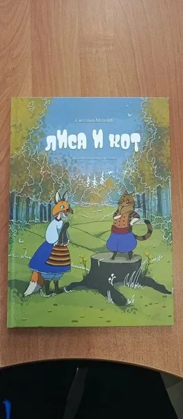
Изготовление эксклюзивных изданий, подарочных книг на заказ в Полиграфическом комплексе «ПК КЕМ» в Москве
Кожаный переплет позволяет сохранить книгу в идеальном состоянии на протяжении многих лет.
С образцами книг «вживую» Вы можете ознакомиться в офисе нашей типографии. В изданиях с таким исполнением тактильные и визуальные ощущения дополняют друг друга и их можно оценить, только перелистав экземпляр книги в реальности.
Минимальный тираж книг
- от 50 штук для переплета из натуральной кожи
- от 200-300 штук для сложных дорогих изданий в переплете из искуственных материалов
Игорь Крутой, книга в кожаном переплете в футляре
- Формат изделия: 330х250мм
- Формат блока: 370х240мм
- Красочность: 2+2/4+4
- Кол-во страниц: 492
- Корешок: Прямой
- Обложка: Натуральная кожа
- Скрепление: Ниткошвейное + клей
- Тиснение: Золотой фольгой
- Футляр из натуральной кожи
- Золотой обрез
Молитвослов
- Формат изделия: 105х155 мм
- Красочность: 4+4
- Кол-во страниц: 768
- Корешок: Скругленный
- Печать блока: 4+4
- Тиснение: блинтовое + золотая фольга
- Золочение обреза
- 3 ляссе
Книга о киевских богатырях
- Формат изделия: 170х237 мм
- Красочность: 1+1
- Кол-во страниц: 324
- Переплет: Французский (корешок с бинтами, выпуклые поперечные элементы)
- Печать блока: 1+1
Исторический очерк развития железных дорог в России
- Формат изделия: 185х247 мм
- Кол-во страниц: 370
ВТС России
- Формат изделия: 257х287 мм
- Объем: (60х84 1/8)
- Кол-во страниц: 432
- Тиснение: Блинтовое
Можем предложить изготовление на заказ
- Книги в переплете из натуральной кожи
- Книги с французским переплетом (с выпуклыми элементами на корешке)
- Книги в комбинированном переплете из материалов итальянского и голландского происхождения - натуральных кож, материалов на полиуретановой, бумажной и тканевой основе разнообразнейших фактур и оттенков
- Отделка книг: золочение и серебрение обрезов, обрезы блока, окрашенные в любой цвет или с цветной печатью изображений
- Комбинация тиснения блинтового и фольгой нескольких цветов
- Декорирование обложки цветными вклейками или вырубка в обложке
- Также: накладные уголки, металлостикеры, металлические шильды с гравировкой
Материалы и образцы


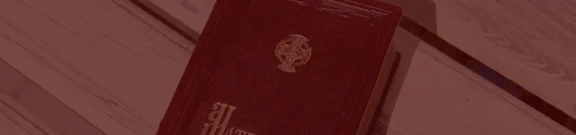
Кожаный переплёт
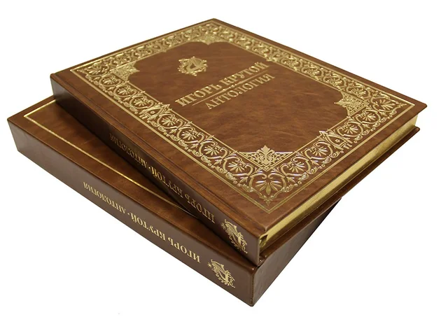
Кожаный переплёт
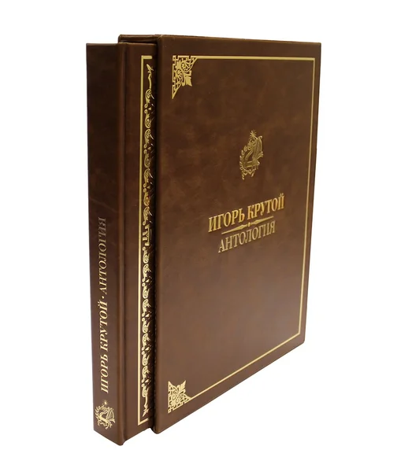
Кожаный переплёт
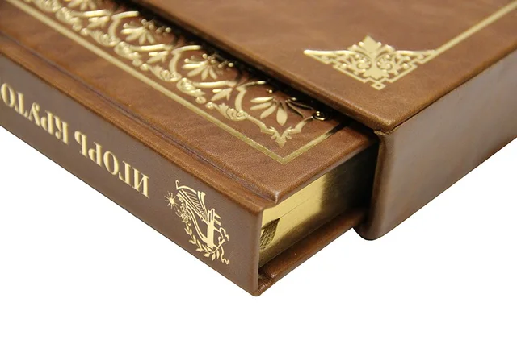
Кожаный переплёт Кожаный переплёт
Кожаный переплёт 
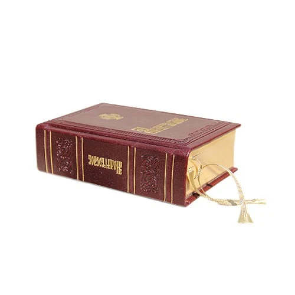
Кожаный переплёт
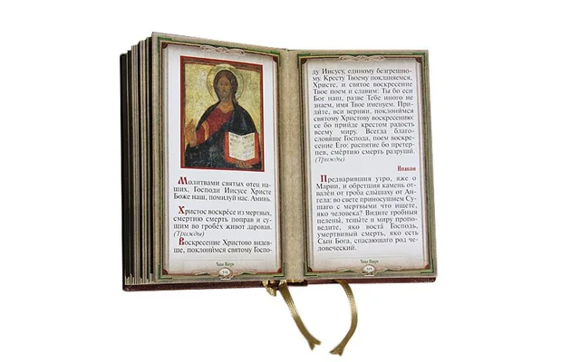
Кожаный переплёт
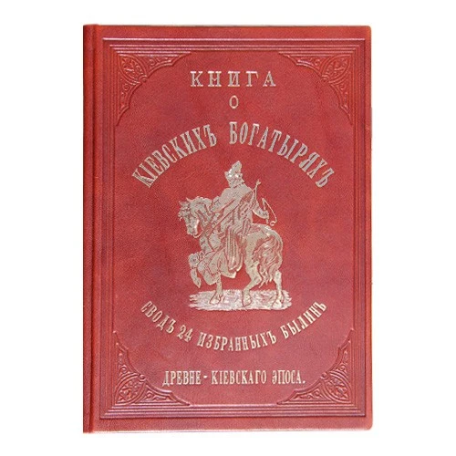
Кожаный переплёт Кожаный переплёт
Кожаный переплёт  Кожаный переплёт
Кожаный переплёт 
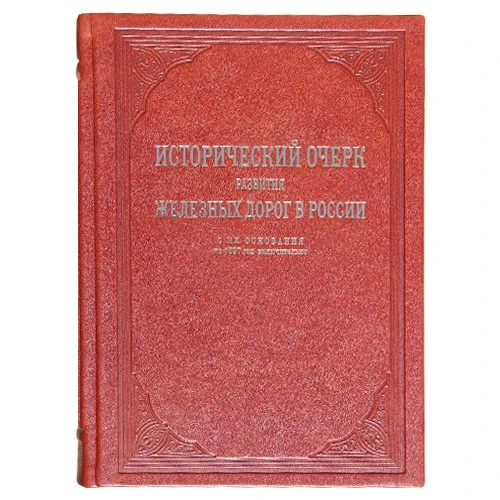
Кожаный переплёт
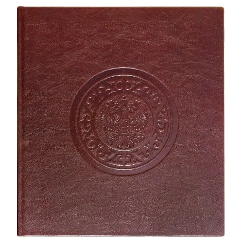
Кожаный переплёт
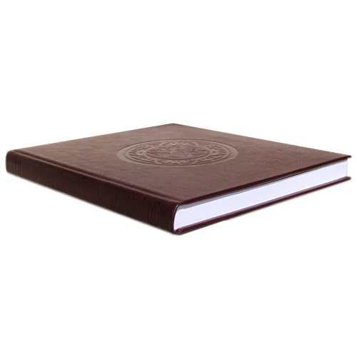
Кожаный переплёт